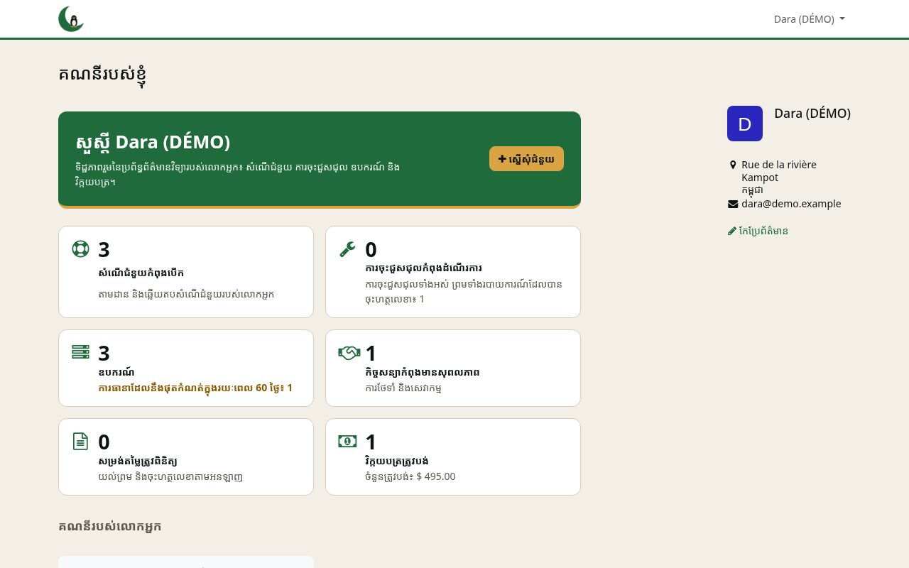

Chantrea Odoo
The management application and client area of Chantrea Systems, the IT services company in Kampot, Cambodia: Odoo 19 Community, self-hosted with Docker. The team works in French; clients use their area in Khmer, English or French. Five OCA repositories are pinned as Git submodules and never modified, and five in-house chantrea_* modules add what Cambodia needs: quotes and invoices in Khmer and English with totals in dollars and riels at the official rate, dates and amounts in Khmer numerals, a till that accepts riels, KHQR payments checked with Bakong, the clients’ equipment and on-site jobs signed by the client. Staff sign in with a code sent by e-mail, and backups are encrypted, with every restore checked.
L’application de gestion et l’espace client de Chantrea Systems, l’entreprise de services informatiques de Kampot, au Cambodge : Odoo 19 Community, auto-hébergé avec Docker. L’équipe travaille en français ; les clients utilisent leur espace en khmer, en anglais ou en français. Cinq dépôts OCA sont épinglés en sous-modules Git et jamais modifiés, et cinq modules maison chantrea_* ajoutent ce qu’il faut au Cambodge : devis et factures en khmer et en anglais avec totaux en dollars et en riels au taux officiel, dates et montants en chiffres khmers, une caisse qui accepte les riels, des paiements KHQR vérifiés auprès de Bakong, le parc matériel des clients et des interventions signées par le client. Le personnel se connecte avec un code reçu par courriel, et les sauvegardes sont chiffrées, chaque restauration vérifiée.
កម្មវិធីគ្រប់គ្រង និងតំបន់អតិថិជនរបស់ Chantrea Systems ដែលជាក្រុមហ៊ុនសេវាកម្មព័ត៌មានវិទ្យា នៅកំពត ប្រទេសកម្ពុជា៖ Odoo 19 Community ដែលដំឡើងនៅលើ server ផ្ទាល់ខ្លួនជាមួយ Docker។ ក្រុមការងារប្រើភាសាបារាំង ហើយអតិថិជនប្រើតំបន់របស់ខ្លួនជាភាសាខ្មែរ អង់គ្លេស ឬបារាំង។ ឃ្លាំងកូដ OCA ចំនួនប្រាំ ត្រូវបានខ្ទាស់ជា submodule របស់ Git ហើយមិនដែលត្រូវបានកែប្រែទេ ហើយ module ផ្ទាល់ខ្លួន chantrea_* ចំនួនប្រាំ បន្ថែមអ្វីដែលកម្ពុជាត្រូវការ៖ សម្រង់តម្លៃ និងវិក្កយបត្រជាភាសាខ្មែរ និងអង់គ្លេស ដែលមានសរុបជាដុល្លារ និងរៀល តាមអត្រាផ្លូវការ កាលបរិច្ឆេទ និងចំនួនទឹកប្រាក់ជាលេខខ្មែរ កន្លែងគិតលុយដែលទទួលប្រាក់រៀល ការបង់ប្រាក់ KHQR ដែលផ្ទៀងផ្ទាត់ជាមួយ Bakong សម្ភារៈរបស់អតិថិជន និងការងារនៅនឹងកន្លែង ដែលអតិថិជនចុះហត្ថលេខា។ បុគ្គលិកចូលប្រើដោយលេខកូដដែលផ្ញើតាមអ៊ីមែល ហើយការបម្រុងទុកត្រូវបានអ៊ិនគ្រីប ដោយការស្តារនីមួយៗត្រូវបានពិនិត្យ។

Clients km · en · fr ──────┐
Team fr · code by e-mail┴─▶ Caddy · HTTPS ─▶ Odoo 19 Community ─▶ PostgreSQL 17
Odoo Contacts · CRM · Sales · Invoicing · l10n_kh · Project · Timesheets
Purchase · Inventory · Portal · Point of Sale
oca/ helpdesk · contract · field-service · timesheet · sign
pinned to a commit, never modified
addons/ chantrea_base · chantrea_kh_facture · chantrea_parc
chantrea_portail · chantrea_caisse
Nightly database + files ─▶ AES-256 archive ─▶ SFTP copy, checked
Monday test restore beside the live database, then deleted
Clients km · en · fr ─────────┐
Équipe fr · code par courriel┴─▶ Caddy · HTTPS ─▶ Odoo 19 Community ─▶ PostgreSQL 17
Odoo Contacts · CRM · Ventes · Facturation · l10n_kh · Projet · Feuilles de temps
Achats · Inventaire · Portail · Point de vente
oca/ helpdesk · contract · field-service · timesheet · sign
épinglés à un commit, jamais modifiés
addons/ chantrea_base · chantrea_kh_facture · chantrea_parc
chantrea_portail · chantrea_caisse
Chaque nuit base + fichiers ─▶ archive AES-256 ─▶ copie SFTP vérifiée
Chaque lundi essai de restauration à côté de la base en service, puis suppression
អតិថិជន km · en · fr ──────┐
ក្រុមការងារ fr · លេខកូដតាមអ៊ីមែល ┴─▶ Caddy · HTTPS ─▶ Odoo 19 Community ─▶ PostgreSQL 17
Odoo Contacts · CRM · Sales · Invoicing · l10n_kh · Project · Timesheets
Purchase · Inventory · Portal · Point of Sale
oca/ helpdesk · contract · field-service · timesheet · sign
ខ្ទាស់នឹង commit មួយ មិនដែលកែប្រែ
addons/ chantrea_base · chantrea_kh_facture · chantrea_parc
chantrea_portail · chantrea_caisse
រៀងរាល់យប់ មូលដ្ឋានទិន្នន័យ + ឯកសារ ─▶ បណ្ណសារ AES-256 ─▶ ច្បាប់ចម្លង SFTP ដែលបានពិនិត្យ
រៀងរាល់ថ្ងៃច័ន្ទ សាកល្បងស្តារ នៅក្បែរមូលដ្ឋានទិន្នន័យដែលកំពុងប្រើ រួចលុបចោល
One Odoo for the company and its clients.
This repository holds the management application of Chantrea Systems, an IT services company in Kampot — sales, invoicing, projects and timesheets, purchases, stock, a helpdesk, maintenance contracts, the clients’ equipment and on-site jobs — and the client area where each client follows its tickets, jobs, equipment, contracts, quotes and invoices. It runs Odoo 19 Community, self-hosted with Docker Compose, with PostgreSQL 17 and Caddy for HTTPS.
The internal interface is in French. Clients use their area in Khmer, English or French, each in the language set on their contact record, and a first visit opens in Khmer. Quotes, invoices, intervention reports and till receipts are printed in Khmer, with the English just below.
One rule runs through the repository: the code of Odoo and of the OCA modules is never modified. The OCA repositories are Git submodules pinned to a commit, and every change or fix is made by inheritance in an in-house chantrea_* module, with an automated test. Tests run in a separate database, never in the working one.
The company is still being registered, so its registration and VAT numbers are left empty, to be entered in Odoo when the time comes.
Odoo, the OCA and five modules of its own.
| Module | Licence | What it brings |
|---|---|---|
| Odoo 19 Community | LGPL-3 | Contacts, CRM, Sales, Invoicing with the Cambodian localisation (l10n_kh), Project, Timesheets, Purchase, Inventory, Portal and Point of Sale. |
| OCA helpdesk | AGPL-3 | Tickets (helpdesk_mgmt), linked to timesheets, sales and field service. |
| OCA contract | AGPL-3 | Recurring contracts and the invoices they create. |
| OCA field-service | AGPL-3 | Equipment and service orders, with the client portal, on-site signature, invoicing and stock. |
| OCA timesheet, sign | AGPL-3 | Installed as dependencies: time control on timesheets, and sign_oca for signatures. |
| chantrea_base | LGPL-3 | The company; French, English and Khmer; the dollar as main currency and the riel without decimals; the INV sales journal; two-factor sign-in for staff; the Technician and Direction groups; Khmer numerals and dates for every report; fixes to Odoo’s KHQR codes. |
| chantrea_kh_facture | LGPL-3 | Cambodian quotes and invoices in Khmer and English, totals in USD and KHR, and the official USD/KHR rate fetched every day. |
| chantrea_parc | AGPL-3 | The clients’ equipment and warranties, and on-site jobs signed by the client, with a Khmer and English report. |
| chantrea_portail | AGPL-3 | The helpdesk and the client area: access rules, monthly maintenance contracts, the home page, tickets by e-mail, and the Khmer and French texts of Odoo and the OCA that clients see. |
| chantrea_caisse | LGPL-3 | A till that sells in dollars and accepts riels, and KHQR payments checked with Bakong. |
chantrea_parc and chantrea_portail are under AGPL-3 because they extend AGPL-3 OCA modules. docs/MODULES.md lists every module with its licence and version, the pinned commits and the digests of the Docker images; on 22 November 2026 every module was checked as installed.
Each client sees its own company, in its own language.
A home page
Six cards: open support requests, jobs in progress, equipment with warranties ending within 60 days, current contracts, quotes to review, and invoices to pay with the amount due, plus an “Ask for help” button. Each figure is computed with the signed-in client’s rights. Odoo’s internal or supplier sections — projects, tasks, timesheets, purchases, remote signature — are not offered.
Tickets
Clients open and follow their tickets in their area; the category is required and checked by the server. Tickets go to the “Assistance Chantrea Systems” team, whose time is tracked in a project, and the client gets an acknowledgement in Khmer, English or French, signed by the company.
Tickets by e-mail
Optional: an e-mail to the support address opens a ticket for a known contact, marked with the e-mail channel and shown in the client’s area, and the client’s replies land in the same ticket. An unknown address is refused, and the sender gets a reply in Khmer, English and French.
Contracts and equipment
Monthly maintenance contracts are invoiced in draft when they fall due, with an activity to validate the invoice; validating it fixes the USD/KHR rate. Clients see their company’s contracts, and their equipment read-only, without internal notes or supplier, which the API does not return either.
Jobs signed on site
A job created from a ticket takes its site and equipment. The technician has the client sign on a tablet or phone, and a job cannot be finished without the signature. The client follows jobs in the area and downloads the report in Khmer and English: request, work done, equipment, signature and time, never the internal instructions.
Languages and isolation
The login page opens in Khmer on a first visit, whatever the browser’s language, and exists in English and French; a returning visitor finds it in their language, and after signing in everything follows the language of the account. A client sees the tickets, quotes and invoices of its own company, never another’s, as the tests check.
Dollars and riels, KHQR and Khmer numerals.
| Topic | How it works |
|---|---|
| Quotes and invoices | Printed in Khmer with the English just below, the total in USD and in KHR. The rate, its date and its source are printed and stored on the invoice when it is validated, and do not change after. Two variants share one numbering with no yearly reset (INV/000001, credit notes RINV/000001): the VAT invoice, which requires the client’s VAT number, and the commercial invoice. |
| Official rate | A scheduled task fetches it every day at 10:00, Phnom Penh time, from the General Department of Taxation or the National Bank of Cambodia, as set. If it fails, nothing is made up: the last published rate stays and an e-mail alert goes out, except at weekends, when nothing is published. Without any rate, an invoice cannot be validated. |
| Khmer numerals | Dates and amounts are also written in Khmer numerals, above the usual digits: ថ្ងៃទី២៦ ខែវិច្ឆិកា ឆ្នាំ២០២៦, $ ៤៩៥.០០. This covers the totals and the table of lines on quotes and invoices, the times on intervention reports, and the totals and lines of the till’s receipt. |
| The till | Sells in dollars and accepts riels, at the day’s official rate or a fixed shop rate (for example 4,000). The payment screen gives the total and the remainder in riels, rounded up to 100 ៛; the cashier enters the notes received in both currencies; change is given in whole dollars and the cents in riels, since dollar coins do not circulate, or all in riels, or all in dollars. One drawer, counted in dollars; at closing, the riels received minus those given back, and a $ box and a ៛ box to count. The receipt is in Khmer and English, whatever the cashier’s language. |
| KHQR | A bank-app QR payment method on a bank journal whose account carries the Bakong ID, in dollars or in riels. With a Bakong API token, the QR window asks Bakong every 3 seconds whether the code has been paid and closes by itself; a payment to the wrong account, in the wrong currency or below the amount is not accepted, and the Bakong reference is kept on the payment. Without a token, or if Bakong does not answer, the cashier confirms. Odoo 19’s KHQR codes are corrected to pass the National Bank’s SDK: the amount’s format, a static code when there is no amount, a reference cut to 25 characters. |
| Khmer review | Every Khmer text clients see was translated by Claude from English and is listed in docs/RELECTURE_KM.md for a native speaker, in three parts: printed documents and Chantrea pages (97), Chantrea modules (65), Odoo and OCA texts (570). None is marked as reviewed yet. Odoo 19 translates only 1 to 17 % of those texts into Khmer, the OCA none; country names come from Unicode CLDR. |
A code at sign-in, encrypted backups, restores that are checked.
| Area | What is in place |
|---|---|
| Sign-in | Two-factor authentication is mandatory for staff: at each sign-in a code is sent by e-mail. Clients get access by invitation. The database manager answers 404, and only Caddy’s ports 80 and 443 are open: Odoo and PostgreSQL are reachable only from inside. |
| Client isolation | Fourteen defects found in the OCA modules are fixed by inheritance, each with a test: a client could close another client’s ticket, read every client’s contract lines through Odoo’s JSON API, read and change all stock moves, or download other clients’ signed documents by trying numbers. The tests of the access rules and of signed documents fail without the fixes. |
| No secrets in Odoo | No password, IP address or login is kept in Odoo: an equipment record or a job text that seems to contain one is refused. |
| Backups | Every night at 2:30, Phnom Penh time, the PostgreSQL database and Odoo’s files go into an AES-256 encrypted archive whose passphrase is kept off the server; the archive is read back, copied by SFTP to a second storage and the copy checked. Archives older than 30 days are removed in both places, and any failure sends an e-mail alert. |
| Restore | Always beside the live database, then checked against the backup’s figures, every attachment present and intact; only then is the live database replaced, the old one kept under another name. Every Monday a test restore runs and removes itself. A backup opened on another domain is neutralised: no e-mails, no scheduled tasks. |
| Server | A step-by-step guide for a rented Ubuntu Server 24.04 LTS (2 processors, 4 GB of memory, 40 GB of disk): SSH keys only, a firewall, automatic security updates, a read-only deploy key, then a script that creates the database in about ten minutes and sends two test e-mails. The server follows main; changes are prepared on developpement. Docker images are pinned by digest. |
| Every e-mail from Odoo leaves from one sender address set on the server, with its author’s name, and replies go back to the author. A script sends two test e-mails, one of them through Odoo, and warns if Odoo’s sender is not that address. |
Built and tested on the workstation.
| State | What |
|---|---|
| Built and tested | The five in-house modules: Cambodian invoices and the official rate, the helpdesk and the client area, contracts, equipment and signed jobs, the Khmer and French translations, the till and KHQR. |
| Tried locally | On 22 November, a rehearsal “as on the server” in a separate Docker installation: setup in 5 minutes, the login page over HTTPS, the database manager closed, a backup, the installation destroyed, then a restore from SFTP in one minute with a witness record and attachment found identical. E-mail and tickets by e-mail were tried with a temporary mail server; KHQR checking with simulated Bakong answers and a fake local Bakong service. The demo uses a fictitious Bakong ID, so no real payment is possible. |
| Not tried | What needs the real server: the Let’s Encrypt certificate on a real domain, the e-mail provider (accepted sender, SPF and DKIM), the support mailbox and its second address, the SFTP host, the Ubuntu preparation commands and the scheduled tasks under systemd. |
| Waiting | The native review of the 732 Khmer texts; the company’s registration and VAT numbers. KHQR payments of invoices are recorded as transfers, without checking. Reporting the OCA defects upstream has not been done and is still to be decided. |
Un seul Odoo pour l’entreprise et ses clients.
Ce dépôt contient l’application de gestion de Chantrea Systems, entreprise de services informatiques à Kampot — ventes, facturation, projets et feuilles de temps, achats, stock, assistance, contrats de maintenance, parc matériel des clients et interventions sur site — et l’espace client où chaque client suit ses tickets, ses interventions, son matériel, ses contrats, ses devis et ses factures. Il fait tourner Odoo 19 Community, auto-hébergé avec Docker Compose, avec PostgreSQL 17 et Caddy pour le HTTPS.
L’interface interne est en français. Les clients utilisent leur espace en khmer, en anglais ou en français, chacun dans la langue de sa fiche de contact, et une première visite s’ouvre en khmer. Devis, factures, rapports d’intervention et tickets de caisse sont imprimés en khmer, l’anglais juste en dessous.
Une règle traverse tout le dépôt : on ne modifie jamais le code d’Odoo ni celui des modules OCA. Les dépôts OCA sont des sous-modules Git épinglés à un commit, et chaque changement ou correctif se fait par héritage dans un module maison chantrea_*, avec un test automatique. Les tests tournent dans une base séparée, jamais dans la base de travail.
La société est encore en cours d’immatriculation : ses numéros d’enregistrement et de TVA restent vides, à saisir dans Odoo le moment venu.
Odoo, l’OCA et cinq modules maison.
| Module | Licence | Ce qu’il apporte |
|---|---|---|
| Odoo 19 Community | LGPL-3 | Contacts, CRM, Ventes, Facturation avec la localisation cambodgienne (l10n_kh), Projet, Feuilles de temps, Achats, Inventaire, Portail et Point de vente. |
| OCA helpdesk | AGPL-3 | Les tickets (helpdesk_mgmt), reliés aux feuilles de temps, aux ventes et aux interventions. |
| OCA contract | AGPL-3 | Les contrats récurrents et les factures qu’ils créent. |
| OCA field-service | AGPL-3 | Équipements et ordres de service, avec l’espace client, la signature sur place, la facturation et le stock. |
| OCA timesheet, sign | AGPL-3 | Installés comme dépendances : le contrôle du temps sur les feuilles de temps, et sign_oca pour les signatures. |
| chantrea_base | LGPL-3 | La société ; le français, l’anglais et le khmer ; le dollar en devise principale et le riel sans décimales ; le journal des ventes INV ; la double authentification du personnel ; les groupes Technicien et Direction ; les chiffres et dates khmers de tous les rapports ; les correctifs des QR codes KHQR d’Odoo. |
| chantrea_kh_facture | LGPL-3 | Devis et factures cambodgiens en khmer et en anglais, totaux en USD et en KHR, et le taux officiel USD/KHR récupéré chaque jour. |
| chantrea_parc | AGPL-3 | Le parc matériel des clients et ses garanties, et les interventions sur site signées par le client, avec un rapport khmer et anglais. |
| chantrea_portail | AGPL-3 | L’assistance et l’espace client : règles d’accès, contrats de maintenance mensuels, page d’accueil, tickets par courriel, et les textes khmers et français d’Odoo et de l’OCA vus par les clients. |
| chantrea_caisse | LGPL-3 | Une caisse qui vend en dollars et accepte les riels, et des paiements KHQR vérifiés auprès de Bakong. |
chantrea_parc et chantrea_portail sont sous AGPL-3 parce qu’ils étendent des modules OCA sous AGPL-3. docs/MODULES.md liste chaque module avec sa licence et sa version, les commits épinglés et les empreintes des images Docker ; le 22 novembre 2026, tous les modules ont été vérifiés comme installés.
Chaque client voit sa société, dans sa langue.
Une page d’accueil
Six cartes : demandes d’assistance ouvertes, interventions en cours, matériel avec les garanties qui se terminent dans les 60 jours, contrats en cours, devis à examiner et factures à payer avec le montant dû, plus un bouton « Demander de l’aide ». Chaque chiffre est calculé avec les droits du client connecté. Les rubriques internes ou fournisseurs d’Odoo — projets, tâches, feuilles de temps, achats, signature à distance — ne sont pas proposées.
Les tickets
Les clients ouvrent et suivent leurs tickets dans leur espace ; la catégorie est obligatoire et contrôlée par le serveur. Les tickets vont à l’équipe « Assistance Chantrea Systems », dont le temps passé est suivi dans un projet, et le client reçoit un accusé de réception en khmer, en anglais ou en français, signé par la société.
Les tickets par courriel
En option : un courriel à l’adresse d’assistance ouvre un ticket pour un contact connu, avec le canal « Courriel », visible dans son espace, et les réponses du client arrivent dans le même ticket. Une adresse inconnue est refusée, et l’expéditeur reçoit une réponse en khmer, en anglais et en français.
Contrats et matériel
Les contrats de maintenance mensuels sont facturés en brouillon à leur échéance, avec une activité pour valider la facture ; la validation fixe le taux USD/KHR. Les clients voient les contrats de leur société, et leur matériel en lecture seule, sans les notes internes ni le fournisseur, que l’API ne renvoie pas non plus.
Des interventions signées sur place
Une intervention créée depuis un ticket reprend son site et ses équipements. Le technicien fait signer le client sur une tablette ou un téléphone, et une intervention ne peut pas être terminée sans signature. Le client suit ses interventions dans son espace et télécharge le rapport khmer et anglais : demande, travaux réalisés, équipements, signature et heure, jamais les instructions internes.
Langues et cloisonnement
La page de connexion s’ouvre en khmer à la première visite, quelle que soit la langue du navigateur, et existe en anglais et en français ; un visiteur déjà venu la retrouve dans sa langue, et après connexion tout suit la langue du compte. Un client voit les tickets, devis et factures de sa société, jamais ceux d’un autre, ce que vérifient les tests.
Dollars et riels, KHQR et chiffres khmers.
| Sujet | Fonctionnement |
|---|---|
| Devis et factures | Imprimés en khmer, l’anglais juste en dessous, avec le total en USD et en KHR. Le taux, sa date et sa source sont imprimés et mémorisés sur la facture à sa validation, et ne changent plus ensuite. Deux variantes partagent une seule numérotation sans remise à zéro annuelle (INV/000001, avoirs RINV/000001) : la facture de TVA, qui exige le numéro de TVA du client, et la facture commerciale. |
| Taux officiel | Une tâche planifiée le récupère chaque jour à 10 h, heure de Phnom Penh, sur le site de la Direction générale des impôts ou de la Banque nationale du Cambodge, selon le réglage. En cas d’échec, rien n’est inventé : le dernier taux publié reste en vigueur et une alerte part par courriel, sauf le week-end, où rien n’est publié. Sans aucun taux, une facture ne peut pas être validée. |
| Chiffres khmers | Dates et montants sont aussi écrits en chiffres khmers, au-dessus des chiffres habituels : ថ្ងៃទី២៦ ខែវិច្ឆិកា ឆ្នាំ២០២៦, $ ៤៩៥.០០. Cela vaut pour les totaux et le tableau des lignes des devis et factures, les heures des rapports d’intervention, et les totaux et lignes du ticket de caisse. |
| La caisse | Elle vend en dollars et accepte les riels, au taux officiel du jour ou à un taux fixe affiché en boutique (par exemple 4 000). L’écran de paiement donne le total et le reste en riels, arrondis aux 100 ៛ supérieurs ; la caissière saisit les billets reçus dans les deux monnaies ; la monnaie est rendue en dollars entiers et les centimes en riels, les pièces de dollar ne circulant pas, ou tout en riels, ou tout en dollars. Un seul tiroir, compté en dollars ; à la clôture, les riels reçus moins les riels rendus, et deux cases « $ » et « ៛ » pour le comptage. Le ticket est en khmer et en anglais, quelle que soit la langue de la caissière. |
| KHQR | Un mode de paiement « Application bancaire (code QR) » sur un journal de banque dont le compte porte l’identifiant Bakong, en dollars ou en riels. Avec un jeton de l’API Bakong, la fenêtre du QR code demande à Bakong toutes les 3 secondes si le code a été payé et se ferme d’elle-même ; un paiement au mauvais compte, dans la mauvaise devise ou inférieur au montant n’est pas accepté, et la référence Bakong est gardée sur le paiement. Sans jeton, ou si Bakong ne répond pas, la caissière confirme. Les QR codes KHQR d’Odoo 19 sont corrigés pour passer le SDK de la Banque nationale : format du montant, code statique sans montant, référence coupée à 25 caractères. |
| Relecture du khmer | Chaque texte khmer vu par les clients a été traduit par Claude depuis l’anglais et figure dans docs/RELECTURE_KM.md pour un locuteur natif, en trois parties : documents imprimés et pages Chantrea (97), modules Chantrea (65), textes d’Odoo et de l’OCA (570). Aucun n’est encore marqué comme relu. Odoo 19 ne traduit que 1 à 17 % de ces textes en khmer, l’OCA aucun ; les noms de pays viennent du référentiel Unicode CLDR. |
Un code à la connexion, des sauvegardes chiffrées, des restaurations vérifiées.
| Domaine | Ce qui est en place |
|---|---|
| Connexion | La double authentification est obligatoire pour le personnel : à chaque connexion, un code est envoyé par courriel. Les clients ont un accès sur invitation. Le gestionnaire de bases répond 404, et seuls les ports 80 et 443 de Caddy sont ouverts : Odoo et PostgreSQL ne sont joignables que de l’intérieur. |
| Cloisonnement des clients | Quatorze défauts trouvés dans les modules OCA sont corrigés par héritage, chacun avec un test : un client pouvait fermer le ticket d’un autre, lire par l’API JSON d’Odoo les lignes des contrats de tous les clients, lire et modifier tous les mouvements de stock, ou télécharger les documents signés des autres en essayant les numéros. Les tests des règles d’accès et des documents signés échouent sans les correctifs. |
| Pas de secrets dans Odoo | Aucun mot de passe, adresse IP ni identifiant n’est gardé dans Odoo : une fiche d’équipement ou un texte d’intervention qui semble en contenir est refusé. |
| Sauvegardes | Chaque nuit à 2 h 30, heure de Phnom Penh, la base PostgreSQL et les fichiers d’Odoo partent dans une archive chiffrée en AES-256, dont la phrase secrète est gardée hors du serveur ; l’archive est relue, copiée par SFTP sur un second stockage, et la copie vérifiée. Les archives de plus de 30 jours sont supprimées des deux côtés, et tout échec envoie une alerte par courriel. |
| Restauration | Toujours à côté de la base en service, puis vérifiée d’après les chiffres de la sauvegarde, chaque pièce jointe présente et intacte ; alors seulement la base en service est remplacée, l’ancienne gardée sous un autre nom. Chaque lundi, un essai de restauration tourne puis s’efface. Une sauvegarde ouverte sur un autre domaine est neutralisée : ni courriels, ni tâches planifiées. |
| Serveur | Un guide pas à pas pour un serveur Ubuntu Server 24.04 LTS loué (2 processeurs, 4 Go de mémoire, 40 Go de disque) : clés SSH seulement, pare-feu, mises à jour de sécurité automatiques, clé de déploiement en lecture seule, puis un script qui crée la base en une dizaine de minutes et envoie deux courriels d’essai. Le serveur suit main ; les changements se préparent sur developpement. Les images Docker sont épinglées par empreinte. |
| Courriels | Tous les courriels d’Odoo partent d’une seule adresse d’expédition réglée sur le serveur, avec le nom de leur auteur, et les réponses reviennent à l’auteur. Un script envoie deux courriels d’essai, dont un par Odoo, et prévient si l’expéditeur d’Odoo n’est pas cette adresse. |
Construit et testé sur le poste de développement.
| État | Quoi |
|---|---|
| Fait et testé | Les cinq modules maison : factures cambodgiennes et taux officiel, assistance et espace client, contrats, parc matériel et interventions signées, traductions khmères et françaises, caisse et KHQR. |
| Essayé en local | Le 22 novembre, une répétition « comme sur le serveur » dans une installation Docker séparée : installation en 5 minutes, page de connexion en HTTPS, gestionnaire de bases fermé, une sauvegarde, l’installation détruite, puis une restauration depuis le SFTP en une minute, donnée témoin et pièce jointe retrouvées à l’identique. Les courriels et les tickets par courriel ont été essayés avec un serveur de courriels provisoire ; la vérification KHQR avec des réponses Bakong simulées et un faux service Bakong local. La démonstration utilise un identifiant Bakong fictif : aucun paiement réel n’est possible. |
| Pas essayé | Ce qui demande le vrai serveur : le certificat Let’s Encrypt avec un vrai nom de domaine, le service d’envoi de courriels (expéditeur accepté, SPF et DKIM), la boîte d’assistance et sa seconde adresse, l’hébergeur SFTP, les commandes de préparation d’Ubuntu et les tâches planifiées par systemd. |
| En attente | La relecture des 732 textes khmers par un locuteur natif ; les numéros d’enregistrement et de TVA de la société. Les paiements KHQR des factures s’enregistrent comme des virements, sans vérification. Le signalement des défauts à l’OCA n’est pas fait et reste à décider. |
Odoo តែមួយ សម្រាប់ក្រុមហ៊ុន និងអតិថិជនរបស់ខ្លួន។
ឃ្លាំងកូដនេះមានកម្មវិធីគ្រប់គ្រងរបស់ Chantrea Systems ដែលជាក្រុមហ៊ុនសេវាកម្មព័ត៌មានវិទ្យានៅកំពត — ការលក់ វិក្កយបត្រ គម្រោង និងតារាងម៉ោងធ្វើការ ការទិញ ស្តុក ផ្នែកជំនួយ កិច្ចសន្យាថែទាំ សម្ភារៈរបស់អតិថិជន និងការងារនៅនឹងកន្លែង — និងតំបន់អតិថិជន ដែលអតិថិជននីមួយៗតាមដានសំបុត្រជំនួយ ការងារ សម្ភារៈ កិច្ចសន្យា សម្រង់តម្លៃ និងវិក្កយបត្ររបស់ខ្លួន។ វាដំណើរការ Odoo 19 Community ដែលដំឡើងនៅលើ server ផ្ទាល់ខ្លួនជាមួយ Docker Compose ជាមួយ PostgreSQL 17 និង Caddy សម្រាប់ HTTPS។
ផ្ទាំងប្រើប្រាស់ខាងក្នុងជាភាសាបារាំង។ អតិថិជនប្រើតំបន់របស់ខ្លួនជាភាសាខ្មែរ អង់គ្លេស ឬបារាំង តាមភាសាដែលកំណត់នៅលើកំណត់ត្រាទំនាក់ទំនងរបស់ខ្លួន ហើយការចូលមើលលើកដំបូងបើកជាភាសាខ្មែរ។ សម្រង់តម្លៃ វិក្កយបត្រ របាយការណ៍ការងារ និងបង្កាន់ដៃគិតលុយ ត្រូវបានបោះពុម្ពជាភាសាខ្មែរ ដោយមានភាសាអង់គ្លេសនៅខាងក្រោម។
ច្បាប់មួយគ្របដណ្តប់ឃ្លាំងកូដទាំងមូល៖ កូដរបស់ Odoo និងរបស់ module OCA មិនដែលត្រូវបានកែប្រែទេ។ ឃ្លាំងកូដ OCA គឺជា submodule របស់ Git ដែលខ្ទាស់នឹង commit មួយ ហើយការផ្លាស់ប្តូរ ឬការកែកំហុសនីមួយៗ ត្រូវបានធ្វើដោយការទទួលមរតក (inheritance) នៅក្នុង module ផ្ទាល់ខ្លួន chantrea_* ជាមួយការធ្វើតេស្តស្វ័យប្រវត្តិ។ ការធ្វើតេស្តដំណើរការក្នុងមូលដ្ឋានទិន្នន័យដាច់ដោយឡែក មិនដែលនៅក្នុងមូលដ្ឋានទិន្នន័យការងារទេ។
ក្រុមហ៊ុនកំពុងស្ថិតក្នុងដំណើរការចុះបញ្ជី ដូច្នេះលេខចុះបញ្ជី និងលេខ VAT របស់វានៅទទេ ដើម្បីបញ្ចូលក្នុង Odoo នៅពេលដល់ពេលកំណត់។
Odoo, OCA និង module ផ្ទាល់ខ្លួនចំនួនប្រាំ។
| Module | អាជ្ញាប័ណ្ណ | អ្វីដែលវានាំមក |
|---|---|---|
| Odoo 19 Community | LGPL-3 | Contacts, CRM, Sales, Invoicing ជាមួយការកំណត់សម្រាប់កម្ពុជា (l10n_kh), Project, Timesheets, Purchase, Inventory, Portal និង Point of Sale។ |
| OCA helpdesk | AGPL-3 | សំបុត្រជំនួយ (helpdesk_mgmt) ដែលភ្ជាប់ទៅតារាងម៉ោងធ្វើការ ការលក់ និងការងារនៅនឹងកន្លែង។ |
| OCA contract | AGPL-3 | កិច្ចសន្យាដែលកើតឡើងជាប្រចាំ និងវិក្កយបត្រដែលវាបង្កើត។ |
| OCA field-service | AGPL-3 | សម្ភារៈ និងបញ្ជាការងារ ជាមួយតំបន់អតិថិជន ហត្ថលេខានៅនឹងកន្លែង វិក្កយបត្រ និងស្តុក។ |
| OCA timesheet, sign | AGPL-3 | ដំឡើងជា dependency៖ ការគ្រប់គ្រងម៉ោងលើតារាងម៉ោងធ្វើការ និង sign_oca សម្រាប់ហត្ថលេខា។ |
| chantrea_base | LGPL-3 | ក្រុមហ៊ុន ភាសាបារាំង អង់គ្លេស និងខ្មែរ ដុល្លារជារូបិយប័ណ្ណចម្បង និងរៀលដោយគ្មានខ្ទង់ទសភាគ ទិនានុប្បវត្តិលក់ INV ការផ្ទៀងផ្ទាត់ពីរជំហានសម្រាប់បុគ្គលិក ក្រុម Technician និង Direction លេខ និងកាលបរិច្ឆេទជាភាសាខ្មែរសម្រាប់របាយការណ៍ទាំងអស់ និងការកែកំហុសនៃ QR code KHQR របស់ Odoo។ |
| chantrea_kh_facture | LGPL-3 | សម្រង់តម្លៃ និងវិក្កយបត្រកម្ពុជា ជាភាសាខ្មែរ និងអង់គ្លេស សរុបជា USD និង KHR និងអត្រាផ្លូវការ USD/KHR ដែលទាញយករៀងរាល់ថ្ងៃ។ |
| chantrea_parc | AGPL-3 | សម្ភារៈរបស់អតិថិជន និងការធានារបស់វា និងការងារនៅនឹងកន្លែង ដែលអតិថិជនចុះហត្ថលេខា ជាមួយរបាយការណ៍ជាភាសាខ្មែរ និងអង់គ្លេស។ |
| chantrea_portail | AGPL-3 | ផ្នែកជំនួយ និងតំបន់អតិថិជន៖ ច្បាប់សិទ្ធិចូលប្រើ កិច្ចសន្យាថែទាំប្រចាំខែ ទំព័រដើម សំបុត្រជំនួយតាមអ៊ីមែល និងអត្ថបទខ្មែរ និងបារាំងរបស់ Odoo និង OCA ដែលអតិថិជនឃើញ។ |
| chantrea_caisse | LGPL-3 | កន្លែងគិតលុយដែលលក់ជាដុល្លារ និងទទួលប្រាក់រៀល និងការបង់ប្រាក់ KHQR ដែលផ្ទៀងផ្ទាត់ជាមួយ Bakong។ |
chantrea_parc និង chantrea_portail ស្ថិតក្រោម AGPL-3 ព្រោះវាពង្រីក module OCA ដែលស្ថិតក្រោម AGPL-3។ docs/MODULES.md រាយបញ្ជី module នីមួយៗ ជាមួយអាជ្ញាប័ណ្ណ និងកំណែរបស់វា commit ដែលបានខ្ទាស់ និង digest នៃ image Docker។ នៅថ្ងៃទី 22 ខែវិច្ឆិកា ឆ្នាំ 2026 module ទាំងអស់ត្រូវបានពិនិត្យថាបានដំឡើងរួច។
អតិថិជននីមួយៗឃើញតែក្រុមហ៊ុនរបស់ខ្លួន ជាភាសារបស់ខ្លួន។
ទំព័រដើម
កាតប្រាំមួយ៖ សំណើជំនួយដែលកំពុងបើក ការងារដែលកំពុងដំណើរការ សម្ភារៈ ជាមួយការធានាដែលនឹងផុតក្នុងរយៈពេល 60 ថ្ងៃ កិច្ចសន្យាបច្ចុប្បន្ន សម្រង់តម្លៃដែលត្រូវពិនិត្យ និងវិក្កយបត្រដែលត្រូវបង់ ជាមួយចំនួនទឹកប្រាក់ដែលជំពាក់ បូកនឹងប៊ូតុង «សុំជំនួយ»។ តួលេខនីមួយៗត្រូវបានគណនាតាមសិទ្ធិរបស់អតិថិជនដែលបានចូល។ ផ្នែកខាងក្នុង ឬផ្នែកអ្នកផ្គត់ផ្គង់របស់ Odoo — គម្រោង កិច្ចការ តារាងម៉ោងធ្វើការ ការទិញ ហត្ថលេខាពីចម្ងាយ — មិនត្រូវបានបង្ហាញទេ។
សំបុត្រជំនួយ
អតិថិជនបើក និងតាមដានសំបុត្រជំនួយរបស់ខ្លួននៅក្នុងតំបន់របស់ខ្លួន។ ប្រភេទគឺចាំបាច់ ហើយត្រូវបានពិនិត្យដោយ server។ សំបុត្រទៅកាន់ក្រុម «Assistance Chantrea Systems» ដែលពេលវេលាធ្វើការត្រូវបានតាមដានក្នុងគម្រោងមួយ ហើយអតិថិជនទទួលបានការបញ្ជាក់ទទួលជាភាសាខ្មែរ អង់គ្លេស ឬបារាំង ដែលចុះហត្ថលេខាដោយក្រុមហ៊ុន។
សំបុត្រតាមអ៊ីមែល
ជាជម្រើស៖ អ៊ីមែលទៅកាន់អាសយដ្ឋានជំនួយ បើកសំបុត្រមួយសម្រាប់ទំនាក់ទំនងដែលស្គាល់ ដោយសម្គាល់ឆានែលអ៊ីមែល និងបង្ហាញនៅក្នុងតំបន់របស់អតិថិជន ហើយចម្លើយរបស់អតិថិជនចូលទៅក្នុងសំបុត្រដដែល។ អាសយដ្ឋានដែលមិនស្គាល់ត្រូវបានបដិសេធ ហើយអ្នកផ្ញើទទួលបានចម្លើយជាភាសាខ្មែរ អង់គ្លេស និងបារាំង។
កិច្ចសន្យា និងសម្ភារៈ
កិច្ចសន្យាថែទាំប្រចាំខែ ត្រូវបានចេញវិក្កយបត្រជាសេចក្តីព្រាង នៅពេលដល់កាលកំណត់ ជាមួយសកម្មភាពមួយដើម្បីបញ្ជាក់វិក្កយបត្រ ហើយការបញ្ជាក់នោះកំណត់អត្រា USD/KHR។ អតិថិជនឃើញកិច្ចសន្យារបស់ក្រុមហ៊ុនខ្លួន និងសម្ភារៈរបស់ខ្លួនសម្រាប់តែអាន ដោយគ្មានកំណត់ចំណាំខាងក្នុង ឬអ្នកផ្គត់ផ្គង់ ដែល API ក៏មិនផ្តល់ឱ្យដែរ។
ការងារដែលចុះហត្ថលេខានៅនឹងកន្លែង
ការងារដែលបង្កើតពីសំបុត្រជំនួយ យកទីតាំង និងសម្ភារៈរបស់សំបុត្រនោះ។ អ្នកបច្ចេកទេសឱ្យអតិថិជនចុះហត្ថលេខាលើថេប្លេត ឬទូរស័ព្ទ ហើយការងារមិនអាចបញ្ចប់បានទេ បើគ្មានហត្ថលេខា។ អតិថិជនតាមដានការងារនៅក្នុងតំបន់របស់ខ្លួន ហើយទាញយករបាយការណ៍ជាភាសាខ្មែរ និងអង់គ្លេស៖ សំណើ ការងារដែលបានធ្វើ សម្ភារៈ ហត្ថលេខា និងម៉ោង ប៉ុន្តែមិនដែលមានការណែនាំខាងក្នុងទេ។
ភាសា និងការបំបែកទិន្នន័យ
ទំព័រចូលប្រើបើកជាភាសាខ្មែរ នៅពេលចូលមើលលើកដំបូង មិនថា browser ប្រើភាសាអ្វីទេ ហើយក៏មានជាភាសាអង់គ្លេស និងបារាំងដែរ។ អ្នកដែលធ្លាប់មកហើយ ឃើញវាជាភាសារបស់ខ្លួន ហើយក្រោយពេលចូល អ្វីៗទាំងអស់តាមភាសានៃគណនី។ អតិថិជនឃើញសំបុត្រ សម្រង់តម្លៃ និងវិក្កយបត្ររបស់ក្រុមហ៊ុនខ្លួន មិនដែលឃើញរបស់អ្នកដទៃទេ ដូចដែលការធ្វើតេស្តពិនិត្យ។
ដុល្លារ និងរៀល KHQR និងលេខខ្មែរ។
| ប្រធានបទ | របៀបដែលវាដំណើរការ |
|---|---|
| សម្រង់តម្លៃ និងវិក្កយបត្រ | បោះពុម្ពជាភាសាខ្មែរ ដោយមានភាសាអង់គ្លេសនៅខាងក្រោម ជាមួយសរុបជា USD និង KHR។ អត្រា កាលបរិច្ឆេទ និងប្រភពរបស់វា ត្រូវបានបោះពុម្ព និងរក្សាទុកលើវិក្កយបត្រ នៅពេលវាត្រូវបានបញ្ជាក់ ហើយមិនផ្លាស់ប្តូរទៀតទេ។ ប្រភេទពីរប្រើលេខរៀងតែមួយ ដោយមិនចាប់ផ្តើមពីសូន្យវិញរៀងរាល់ឆ្នាំ (INV/000001 លិខិតឥណទាន RINV/000001)៖ វិក្កយបត្រអាករ ដែលត្រូវការលេខ VAT របស់អតិថិជន និងវិក្កយបត្រពាណិជ្ជកម្ម។ |
| អត្រាផ្លូវការ | កិច្ចការដែលបានកំណត់ពេល ទាញយកវារៀងរាល់ថ្ងៃ នៅម៉ោង 10:00 ម៉ោងភ្នំពេញ ពីអគ្គនាយកដ្ឋានពន្ធដារ ឬធនាគារជាតិនៃកម្ពុជា តាមការកំណត់។ ប្រសិនបើបរាជ័យ គ្មានអ្វីត្រូវបានបង្កើតឡើងដោយប្រឌិតទេ៖ អត្រាចុងក្រោយដែលបានផ្សព្វផ្សាយនៅតែប្រើ ហើយការជូនដំណឹងមួយត្រូវបានផ្ញើតាមអ៊ីមែល លើកលែងតែចុងសប្តាហ៍ ដែលគ្មានការផ្សព្វផ្សាយ។ បើគ្មានអត្រាណាមួយទេ វិក្កយបត្រមិនអាចបញ្ជាក់បានទេ។ |
| លេខខ្មែរ | កាលបរិច្ឆេទ និងចំនួនទឹកប្រាក់ ក៏ត្រូវបានសរសេរជាលេខខ្មែរផងដែរ នៅខាងលើលេខធម្មតា៖ ថ្ងៃទី២៦ ខែវិច្ឆិកា ឆ្នាំ២០២៦, $ ៤៩៥.០០។ នេះអនុវត្តចំពោះសរុប និងតារាងបន្ទាត់នៃសម្រង់តម្លៃ និងវិក្កយបត្រ ម៉ោងនៅលើរបាយការណ៍ការងារ និងសរុប និងបន្ទាត់នៃបង្កាន់ដៃគិតលុយ។ |
| កន្លែងគិតលុយ | លក់ជាដុល្លារ និងទទួលប្រាក់រៀល តាមអត្រាផ្លូវការនៃថ្ងៃ ឬអត្រាថេររបស់ហាង (ឧទាហរណ៍ 4,000)។ អេក្រង់បង់ប្រាក់បង្ហាញសរុប និងចំនួននៅសល់ជាប្រាក់រៀល ដែលបង្គត់ឡើងដល់ 100 ៛។ អ្នកគិតលុយបញ្ចូលក្រដាសប្រាក់ដែលទទួលបានជារូបិយប័ណ្ណទាំងពីរ។ ប្រាក់អាប់ត្រូវបានផ្តល់ជាដុល្លារគត់ ហើយសេនជាប្រាក់រៀល ព្រោះកាក់ដុល្លារមិនចរាចរ ឬទាំងអស់ជាប្រាក់រៀល ឬទាំងអស់ជាដុល្លារ។ ថតប្រាក់តែមួយ ដែលរាប់ជាដុល្លារ។ នៅពេលបិទ ប្រាក់រៀលដែលទទួលបាន ដកប្រាក់រៀលដែលបានអាប់ និងប្រអប់ $ និង ៛ សម្រាប់រាប់។ បង្កាន់ដៃគឺជាភាសាខ្មែរ និងអង់គ្លេស មិនថាអ្នកគិតលុយប្រើភាសាអ្វីទេ។ |
| KHQR | វិធីបង់ប្រាក់តាម QR code នៃកម្មវិធីធនាគារ លើទិនានុប្បវត្តិធនាគារ ដែលគណនីមានលេខសម្គាល់ Bakong ជាដុល្លារ ឬជាប្រាក់រៀល។ ជាមួយ token របស់ API Bakong ផ្ទាំង QR សួរ Bakong រៀងរាល់ 3 វិនាទីម្តង ថាតើ QR នោះត្រូវបានបង់ហើយឬនៅ ហើយបិទដោយខ្លួនឯង។ ការបង់ប្រាក់ទៅគណនីខុស ជារូបិយប័ណ្ណខុស ឬតិចជាងចំនួនទឹកប្រាក់ មិនត្រូវបានទទួលយកទេ ហើយលេខយោង Bakong ត្រូវបានរក្សាទុកលើការបង់ប្រាក់។ បើគ្មាន token ឬបើ Bakong មិនឆ្លើយតប អ្នកគិតលុយជាអ្នកបញ្ជាក់។ QR code KHQR របស់ Odoo 19 ត្រូវបានកែ ដើម្បីឆ្លងកាត់ SDK របស់ធនាគារជាតិ៖ ទម្រង់នៃចំនួនទឹកប្រាក់ QR ថេរនៅពេលគ្មានចំនួនទឹកប្រាក់ និងលេខយោងដែលកាត់ត្រឹម 25 តួអក្សរ។ |
| ការពិនិត្យភាសាខ្មែរ | អត្ថបទខ្មែរនីមួយៗដែលអតិថិជនឃើញ ត្រូវបានបកប្រែដោយ Claude ពីភាសាអង់គ្លេស ហើយត្រូវបានរាយក្នុង docs/RELECTURE_KM.md សម្រាប់អ្នកនិយាយភាសាខ្មែរពីកំណើត ជាបីផ្នែក៖ ឯកសារបោះពុម្ព និងទំព័រ Chantrea (97) module Chantrea (65) និងអត្ថបទរបស់ Odoo និង OCA (570)។ មិនទាន់មានអត្ថបទណាមួយត្រូវបានសម្គាល់ថាបានពិនិត្យរួចនៅឡើយទេ។ Odoo 19 បកប្រែអត្ថបទទាំងនោះជាភាសាខ្មែរបានតែ 1 ទៅ 17 % ហើយ OCA មិនបកប្រែសោះ។ ឈ្មោះប្រទេសយកពី Unicode CLDR។ |
លេខកូដពេលចូល ការបម្រុងទុកដែលអ៊ិនគ្រីប និងការស្តារដែលត្រូវបានពិនិត្យ។
| ផ្នែក | អ្វីដែលបានដាក់ឱ្យដំណើរការ |
|---|---|
| ការចូលប្រើ | ការផ្ទៀងផ្ទាត់ពីរជំហានគឺចាំបាច់សម្រាប់បុគ្គលិក៖ រាល់ពេលចូល លេខកូដមួយត្រូវបានផ្ញើតាមអ៊ីមែល។ អតិថិជនទទួលបានសិទ្ធិចូលប្រើតាមការអញ្ជើញ។ កម្មវិធីគ្រប់គ្រងមូលដ្ឋានទិន្នន័យឆ្លើយ 404 ហើយមានតែច្រក 80 និង 443 របស់ Caddy ប៉ុណ្ណោះដែលបើក៖ Odoo និង PostgreSQL អាចភ្ជាប់បានតែពីខាងក្នុងប៉ុណ្ណោះ។ |
| ការបំបែកអតិថិជន | កំហុសដប់បួនដែលរកឃើញក្នុង module OCA ត្រូវបានកែដោយការទទួលមរតក ដោយនីមួយៗមានការធ្វើតេស្ត៖ អតិថិជនម្នាក់អាចបិទសំបុត្ររបស់អតិថិជនម្នាក់ទៀត អានបន្ទាត់កិច្ចសន្យារបស់អតិថិជនទាំងអស់តាម API JSON របស់ Odoo អាន និងកែប្រែចលនាស្តុកទាំងអស់ ឬទាញយកឯកសារដែលបានចុះហត្ថលេខារបស់អ្នកដទៃ ដោយសាកល្បងលេខ។ ការធ្វើតេស្តនៃច្បាប់សិទ្ធិចូលប្រើ និងឯកសារដែលបានចុះហត្ថលេខា បរាជ័យ បើគ្មានការកែទាំងនេះ។ |
| គ្មានអាថ៌កំបាំងក្នុង Odoo | គ្មានពាក្យសម្ងាត់ អាសយដ្ឋាន IP ឬឈ្មោះចូលប្រើ ត្រូវបានរក្សាទុកក្នុង Odoo ទេ៖ កំណត់ត្រាសម្ភារៈ ឬអត្ថបទការងារ ដែលហាក់ដូចជាមានវា ត្រូវបានបដិសេធ។ |
| ការបម្រុងទុក | រៀងរាល់យប់ នៅម៉ោង 2:30 ម៉ោងភ្នំពេញ មូលដ្ឋានទិន្នន័យ PostgreSQL និងឯកសាររបស់ Odoo ត្រូវបានដាក់ក្នុងបណ្ណសារដែលអ៊ិនគ្រីបដោយ AES-256 ដែលឃ្លាសម្ងាត់របស់វាត្រូវបានរក្សាទុកនៅក្រៅ server។ បណ្ណសារត្រូវបានអានឡើងវិញ ចម្លងតាម SFTP ទៅកន្លែងផ្ទុកទីពីរ ហើយច្បាប់ចម្លងត្រូវបានពិនិត្យ។ បណ្ណសារដែលចាស់ជាង 30 ថ្ងៃ ត្រូវបានលុបនៅទាំងសងខាង ហើយការបរាជ័យណាមួយផ្ញើការជូនដំណឹងតាមអ៊ីមែល។ |
| ការស្តារ | តែងតែធ្វើនៅក្បែរមូលដ្ឋានទិន្នន័យដែលកំពុងប្រើ រួចពិនិត្យជាមួយតួលេខនៃការបម្រុងទុក ដោយឯកសារភ្ជាប់នីមួយៗមានគ្រប់ និងនៅដដែល។ ក្រោយពីនោះទើបមូលដ្ឋានទិន្នន័យដែលកំពុងប្រើត្រូវបានជំនួស ហើយមូលដ្ឋានចាស់ត្រូវបានរក្សាទុកក្រោមឈ្មោះផ្សេង។ រៀងរាល់ថ្ងៃច័ន្ទ ការសាកល្បងស្តារមួយដំណើរការ រួចលុបខ្លួនឯង។ ការបម្រុងទុកដែលបើកនៅលើដែនផ្សេង ត្រូវបានធ្វើឱ្យអសកម្ម៖ គ្មានការផ្ញើអ៊ីមែល គ្មានកិច្ចការដែលបានកំណត់ពេល។ |
| Server | មគ្គុទ្ទេសក៍មួយជំហានម្តងៗ សម្រាប់ Ubuntu Server 24.04 LTS ដែលជួល (ប្រព័ន្ធដំណើរការ 2 អង្គចងចាំ 4 GB ថាស 40 GB)៖ កូនសោ SSH ប៉ុណ្ណោះ ជញ្ជាំងភ្លើង ការធ្វើបច្ចុប្បន្នភាពសុវត្ថិភាពដោយស្វ័យប្រវត្តិ កូនសោ deploy សម្រាប់តែអាន រួច script មួយដែលបង្កើតមូលដ្ឋានទិន្នន័យក្នុងរយៈពេលប្រហែលដប់នាទី និងផ្ញើអ៊ីមែលសាកល្បងពីរ។ server តាម branch main ហើយការផ្លាស់ប្តូរត្រូវបានរៀបចំនៅលើ developpement។ image Docker ត្រូវបានខ្ទាស់តាម digest។ |
| អ៊ីមែល | អ៊ីមែលទាំងអស់ពី Odoo ចេញពីអាសយដ្ឋានអ្នកផ្ញើតែមួយ ដែលកំណត់នៅលើ server ជាមួយឈ្មោះអ្នកនិពន្ធ ហើយចម្លើយត្រឡប់ទៅអ្នកនិពន្ធវិញ។ script មួយផ្ញើអ៊ីមែលសាកល្បងពីរ ដែលមួយក្នុងនោះតាម Odoo ហើយព្រមាន ប្រសិនបើអ្នកផ្ញើរបស់ Odoo មិនមែនជាអាសយដ្ឋាននោះ។ |
បានបង្កើត និងធ្វើតេស្តនៅលើកុំព្យូទ័រអភិវឌ្ឍន៍។
| ស្ថានភាព | អ្វីខ្លះ |
|---|---|
| បានបង្កើត និងធ្វើតេស្ត | module ផ្ទាល់ខ្លួនទាំងប្រាំ៖ វិក្កយបត្រកម្ពុជា និងអត្រាផ្លូវការ ផ្នែកជំនួយ និងតំបន់អតិថិជន កិច្ចសន្យា សម្ភារៈ និងការងារដែលបានចុះហត្ថលេខា ការបកប្រែជាភាសាខ្មែរ និងបារាំង កន្លែងគិតលុយ និង KHQR។ |
| បានសាកល្បងក្នុងម៉ាស៊ីន | នៅថ្ងៃទី 22 ខែវិច្ឆិកា ការហាត់សម «ដូចនៅលើ server» ក្នុងការដំឡើង Docker ដាច់ដោយឡែក៖ ការដំឡើងក្នុងរយៈពេល 5 នាទី ទំព័រចូលប្រើតាម HTTPS កម្មវិធីគ្រប់គ្រងមូលដ្ឋានទិន្នន័យត្រូវបានបិទ ការបម្រុងទុកមួយ ការដំឡើងត្រូវបានបំផ្លាញ រួចការស្តារពី SFTP ក្នុងរយៈពេលមួយនាទី ដោយទិន្នន័យសាកល្បង និងឯកសារភ្ជាប់ត្រូវបានរកឃើញដូចដើម។ អ៊ីមែល និងសំបុត្រតាមអ៊ីមែល ត្រូវបានសាកល្បងជាមួយ server អ៊ីមែលបណ្តោះអាសន្ន ហើយការផ្ទៀងផ្ទាត់ KHQR ជាមួយចម្លើយ Bakong ដែលក្លែងធ្វើ និងសេវា Bakong ក្លែងក្លាយក្នុងម៉ាស៊ីន។ ការបង្ហាញសាកល្បងប្រើលេខសម្គាល់ Bakong ប្រឌិត ដូច្នេះមិនអាចមានការបង់ប្រាក់ពិតទេ។ |
| មិនទាន់សាកល្បង | អ្វីដែលត្រូវការ server ពិត៖ វិញ្ញាបនបត្រ Let’s Encrypt ជាមួយឈ្មោះដែនពិត សេវាផ្ញើអ៊ីមែល (អ្នកផ្ញើដែលទទួលយក SPF និង DKIM) ប្រអប់សំបុត្រជំនួយ និងអាសយដ្ឋានទីពីររបស់វា អ្នកផ្តល់សេវា SFTP ពាក្យបញ្ជារៀបចំ Ubuntu និងកិច្ចការដែលបានកំណត់ពេលក្រោម systemd។ |
| កំពុងរង់ចាំ | ការពិនិត្យអត្ថបទខ្មែរទាំង 732 ដោយអ្នកនិយាយភាសាខ្មែរពីកំណើត លេខចុះបញ្ជី និងលេខ VAT របស់ក្រុមហ៊ុន។ ការបង់ប្រាក់ KHQR នៃវិក្កយបត្រ ត្រូវបានកត់ត្រាជាការផ្ទេរប្រាក់ ដោយគ្មានការផ្ទៀងផ្ទាត់។ ការរាយការណ៍កំហុសទៅ OCA មិនទាន់បានធ្វើ ហើយនៅតែត្រូវសម្រេចចិត្ត។ |
On the demo data.Sur les données de démonstration.លើទិន្នន័យសាកល្បង។
Taken on 26 November 2026 on a local installation with the repository’s demo data: the clients, marked DÉMO, are made up. The installation runs the developpement branch, three commits ahead of main: demo clients for every combination of languages, and the address’s country written in English on invoices and quotes.
Prises le 26 novembre 2026 sur une installation locale, avec les données de démonstration du dépôt : les clients, marqués DÉMO, sont fictifs. L’installation suit la branche developpement, trois commits en avance sur main : des clients de démonstration pour chaque combinaison de langues, et le pays de l’adresse écrit en anglais sur les factures et les devis.
ថតនៅថ្ងៃទី 26 ខែវិច្ឆិកា ឆ្នាំ 2026 លើការដំឡើងក្នុងម៉ាស៊ីន ជាមួយទិន្នន័យសាកល្បងរបស់ repository៖ អតិថិជនដែលមានសញ្ញា DÉMO គឺប្រឌិត។ ការដំឡើងនេះប្រើ branch developpement ដែលនាំមុខ main បី commit៖ អតិថិជនសាកល្បងសម្រាប់គ្រប់ការផ្សំភាសា និងប្រទេសនៃអាសយដ្ឋានសរសេរជាភាសាអង់គ្លេស នៅលើវិក្កយបត្រ និងសម្រង់តម្លៃ។


How it is built.
| Odoo | The official Odoo 19.0 Community image (build 19.0-20261112), pinned by digest, with the Noto Khmer fonts added for the PDFs. odoo.conf is generated at start-up from the environment: no database list, workers, proxy mode. |
| Services | Docker Compose: PostgreSQL 17, Odoo and Caddy 2 (HTTPS, websocket, database manager blocked). On the workstation, Mailpit catches every e-mail, sign-in codes included. |
| OCA | helpdesk, contract, field-service, timesheet and sign, branch 19.0, as Git submodules pinned to commits of 11 to 21 November 2026. |
| In-house code | addons/chantrea_*: Python models and controllers, QWeb reports and views, SCSS, and JavaScript for the till. Khmer numerals and dates come from chantrea_base/outils_km.py, passed to every report as km. |
| Translations | i18n/fr.po and km.po in each module; chantrea_portail/i18n_clients/ holds the Odoo and OCA texts clients see, loaded at each install or update and taking precedence over edits made in Odoo; texts written in the Python and JavaScript of Odoo and the OCA are completed at start-up. |
| Tests | scripts/tests.sh builds a fresh chantrea_test database (about 6 minutes) or reuses it with --rapide: 137 Odoo test methods across the five modules, and 12 Node tests for the till’s riel and Khmer calculations. |
| Scripts | Local and server setup, update, module check, backup, restore, a full backup rehearsal with a temporary SFTP server, an e-mail test, demo data (refused outside localhost) and the Khmer review list. |
| Scheduled tasks | systemd timers for the nightly backup and the Monday test restore; in Odoo, the USD/KHR rate at 10:00, warranty alerts at 7:00 and the contracts’ invoices every day. |
Comment c’est construit.
| Odoo | L’image officielle Odoo 19.0 Community (build 19.0-20261112), épinglée par empreinte, avec les polices Noto khmères ajoutées pour les PDF. odoo.conf est généré au démarrage depuis l’environnement : pas de liste des bases, workers, mode proxy. |
| Services | Docker Compose : PostgreSQL 17, Odoo et Caddy 2 (HTTPS, websocket, gestionnaire de bases bloqué). Sur le poste, Mailpit reçoit tous les courriels, codes de connexion compris. |
| OCA | helpdesk, contract, field-service, timesheet et sign, branche 19.0, en sous-modules Git épinglés à des commits du 11 au 21 novembre 2026. |
| Code maison | addons/chantrea_* : modèles et contrôleurs Python, rapports et vues QWeb, SCSS, et JavaScript pour la caisse. Les chiffres et dates khmers viennent de chantrea_base/outils_km.py, passé à tous les rapports sous le nom km. |
| Traductions | i18n/fr.po et km.po dans chaque module ; chantrea_portail/i18n_clients/ contient les textes d’Odoo et de l’OCA vus par les clients, chargés à chaque installation ou mise à jour et prioritaires sur les retouches faites dans Odoo ; les textes écrits dans le Python et le JavaScript d’Odoo et de l’OCA sont complétés au démarrage. |
| Tests | scripts/tests.sh crée une base chantrea_test neuve (environ 6 minutes) ou la réutilise avec --rapide : 137 méthodes de test Odoo dans les cinq modules, et 12 tests Node pour les calculs en riels et en khmer de la caisse. |
| Scripts | Installation locale et sur le serveur, mise à jour, vérification des modules, sauvegarde, restauration, essai complet des sauvegardes avec un serveur SFTP provisoire, essai de courriel, données de démonstration (refusées hors localhost) et liste de relecture du khmer. |
| Tâches planifiées | Minuteries systemd pour la sauvegarde de la nuit et l’essai de restauration du lundi ; dans Odoo, le taux USD/KHR à 10 h, les alertes de garantie à 7 h et les factures des contrats chaque jour. |
របៀបដែលវាត្រូវបានបង្កើត។
| Odoo | image ផ្លូវការ Odoo 19.0 Community (build 19.0-20261112) ដែលខ្ទាស់តាម digest ជាមួយពុម្ពអក្សរ Noto ខ្មែរ ដែលបន្ថែមសម្រាប់ PDF។ odoo.conf ត្រូវបានបង្កើតនៅពេលចាប់ផ្តើម ពីបរិស្ថាន៖ គ្មានបញ្ជីមូលដ្ឋានទិន្នន័យ workers និងរបៀប proxy។ |
| សេវា | Docker Compose៖ PostgreSQL 17, Odoo និង Caddy 2 (HTTPS, websocket, កម្មវិធីគ្រប់គ្រងមូលដ្ឋានទិន្នន័យត្រូវបានរារាំង)។ នៅលើកុំព្យូទ័រអភិវឌ្ឍន៍ Mailpit ចាប់អ៊ីមែលទាំងអស់ រួមទាំងលេខកូដចូលប្រើ។ |
| OCA | helpdesk, contract, field-service, timesheet និង sign, branch 19.0 ជា submodule របស់ Git ដែលខ្ទាស់នឹង commit ពីថ្ងៃទី 11 ដល់ 21 ខែវិច្ឆិកា ឆ្នាំ 2026។ |
| កូដផ្ទាល់ខ្លួន | addons/chantrea_*៖ model និង controller ជា Python របាយការណ៍ និង view QWeb, SCSS និង JavaScript សម្រាប់កន្លែងគិតលុយ។ លេខ និងកាលបរិច្ឆេទខ្មែរ មកពី chantrea_base/outils_km.py ដែលត្រូវបានផ្តល់ទៅរបាយការណ៍ទាំងអស់ក្រោមឈ្មោះ km។ |
| ការបកប្រែ | i18n/fr.po និង km.po នៅក្នុង module នីមួយៗ។ chantrea_portail/i18n_clients/ មានអត្ថបទរបស់ Odoo និង OCA ដែលអតិថិជនឃើញ ដែលត្រូវបានផ្ទុករាល់ពេលដំឡើង ឬធ្វើបច្ចុប្បន្នភាព និងមានអាទិភាពលើការកែប្រែដែលធ្វើក្នុង Odoo។ អត្ថបទដែលសរសេរក្នុង Python និង JavaScript របស់ Odoo និង OCA ត្រូវបានបំពេញនៅពេលចាប់ផ្តើម។ |
| ការធ្វើតេស្ត | scripts/tests.sh បង្កើតមូលដ្ឋានទិន្នន័យ chantrea_test ថ្មី (ប្រហែល 6 នាទី) ឬប្រើវាឡើងវិញជាមួយ --rapide៖ វិធីសាស្ត្រតេស្ត Odoo ចំនួន 137 នៅក្នុង module ទាំងប្រាំ និងការធ្វើតេស្ត Node ចំនួន 12 សម្រាប់ការគណនាប្រាក់រៀល និងភាសាខ្មែររបស់កន្លែងគិតលុយ។ |
| Script | ការដំឡើងក្នុងម៉ាស៊ីន និងនៅលើ server ការធ្វើបច្ចុប្បន្នភាព ការពិនិត្យ module ការបម្រុងទុក ការស្តារ ការហាត់សមការបម្រុងទុកពេញលេញជាមួយ server SFTP បណ្តោះអាសន្ន ការសាកល្បងអ៊ីមែល ទិន្នន័យសាកល្បង (បដិសេធនៅក្រៅ localhost) និងបញ្ជីពិនិត្យភាសាខ្មែរ។ |
| កិច្ចការកំណត់ពេល | timer របស់ systemd សម្រាប់ការបម្រុងទុកពេលយប់ និងការសាកល្បងស្តារនៅថ្ងៃច័ន្ទ។ នៅក្នុង Odoo អត្រា USD/KHR នៅម៉ោង 10:00 ការជូនដំណឹងការធានានៅម៉ោង 7:00 និងវិក្កយបត្រនៃកិច្ចសន្យារៀងរាល់ថ្ងៃ។ |
A till in riels, KHQR and Khmer numerals.
A summary of the latest commits in the repository, up to 25 November 2026.
- Khmer numerals, and Khmer on a first visit
Invoices, quotes and intervention reports write their dates the Khmer way and their totals in Khmer numerals, above the usual digits, and the table of lines follows: number, quantity, unit price, discount and amount. The till’s receipt adds quantity and amount in Khmer numerals under each product line, and the shop’s address no longer starts with a stray comma. The login page opens in Khmer on a first visit, whatever the browser’s language; the visitor’s choice and the account’s language still come first. The Khmer review list now also reads the receipt’s labels: 732 texts to review, 14 of them new.
- A till in dollars and riels, KHQR checked with Bakong
The new chantrea_caisse module makes Odoo’s Point of Sale a till that sells in dollars and accepts riels: the day’s official rate or a fixed one, total and remainder in riels rounded to 100 ៛, cash taken in both currencies, change in whole dollars plus riels, and a closing count in $ and ៛. Odoo’s KHQR codes are corrected to pass the National Bank’s SDK, and invoices get a “Scan to pay with KHQR” block. With a Bakong API token, the QR window asks Bakong every 3 seconds whether it has been paid and confirms by itself, refusing a payment to the wrong account, in the wrong currency or too small. The customer’s receipt is entirely in Khmer and English, whatever the cashier’s language.
- E-mail, tickets by e-mail and a Khmer login page
Every e-mail now leaves from one sender address, with its author’s name, and replies go back to the author; a script sends two test e-mails and warns when Odoo’s sender is not that address. A ticket can be opened by e-mail: a known contact gets it in their area, with the acknowledgement in their language, while an unknown address is refused with a reply in Khmer, English and French. The login page follows the language of the address or of the visitor instead of staying in English, e-mail buttons and the tax group are translated into Khmer, and two standard Odoo blocks with no use in Cambodia are hidden from clients.
- Encrypted backups and a server guide
A nightly backup puts the database and Odoo’s files in an AES-256 archive, reads it back, copies it by SFTP and checks the copy, keeping 30 days. A restore always goes beside the live database and is verified before it replaces anything; a weekly test restore changes nothing. A setup script and two scheduled tasks prepare the server, and the deployment guide covers installation, e-mail, backups, restore, updates and troubleshooting, with what was tried and what could not be. The server follows main, fed from the developpement branch.
- The client area’s home page, and Odoo in Khmer
The client area opens on a dashboard in Chantrea’s colours — tickets, jobs, equipment, contracts, quotes and invoices, each counted with the client’s own rights — with an “Ask for help” button. The Odoo and OCA texts clients see are translated into Khmer, with country names from Unicode CLDR, and loaded at each update without touching Odoo or the OCA. Without the website module, the signature window and messaging stayed in English and an OCA script raised an error on every page: both are fixed. All Khmer texts are listed for a native review, in three parts.
- From the first commit to jobs signed on site
The repository starts with Odoo 19 Community in Docker with PostgreSQL 17 and Caddy, five OCA repositories pinned as submodules, and two-factor sign-in for staff. chantrea_base sets up the company, French, English and Khmer, the dollar and the riel; chantrea_kh_facture prints quotes and invoices in Khmer and English with totals in USD and KHR at the official rate. The helpdesk, monthly maintenance contracts, the clients’ equipment and on-site jobs signed by the client follow, with fixes to OCA modules through which a client could close another client’s ticket, read other clients’ contract lines or download their signed documents.
Earlier versions of this page, with their captures and videos: History →
Une caisse en riels, le KHQR et les chiffres khmers.
Un résumé des derniers commits du dépôt, jusqu’au 25 novembre 2026.
- Chiffres khmers, et le khmer à la première visite
Factures, devis et rapports d’intervention écrivent leurs dates à la khmère et leurs totaux en chiffres khmers, au-dessus des chiffres habituels, et le tableau des lignes suit : numéro, quantité, prix unitaire, remise et montant. Le ticket de caisse ajoute quantité et montant en chiffres khmers sous chaque ligne de produit, et l’adresse de la boutique ne commence plus par une virgule en trop. La page de connexion s’ouvre en khmer à la première visite, quelle que soit la langue du navigateur ; le choix du visiteur et la langue du compte restent prioritaires. La liste de relecture du khmer lit aussi les libellés du ticket : 732 textes à relire, dont 14 nouveaux.
- Une caisse en dollars et en riels, le KHQR vérifié auprès de Bakong
Le nouveau module chantrea_caisse fait du Point de vente d’Odoo une caisse qui vend en dollars et accepte les riels : taux officiel du jour ou taux fixe, total et reste en riels arrondis aux 100 ៛, espèces reçues dans les deux monnaies, monnaie rendue en dollars entiers plus des riels, et comptage de clôture en $ et en ៛. Les QR codes KHQR d’Odoo sont corrigés pour passer le SDK de la Banque nationale, et les factures reçoivent un bloc « Scan to pay with KHQR ». Avec un jeton de l’API Bakong, la fenêtre du QR code demande à Bakong toutes les 3 secondes s’il a été payé et confirme d’elle-même, en refusant un paiement au mauvais compte, dans la mauvaise devise ou insuffisant. Le ticket du client est entièrement en khmer et en anglais, quelle que soit la langue de la caissière.
- Courriels, tickets par courriel et page de connexion en khmer
Tous les courriels partent désormais d’une seule adresse d’expédition, avec le nom de leur auteur, et les réponses reviennent à l’auteur ; un script envoie deux courriels d’essai et prévient si l’expéditeur d’Odoo n’est pas cette adresse. Un ticket peut être ouvert par courriel : un contact connu le retrouve dans son espace, avec l’accusé de réception dans sa langue, tandis qu’une adresse inconnue est refusée avec une réponse en khmer, en anglais et en français. La page de connexion suit la langue de l’adresse ou du visiteur au lieu de rester en anglais, les boutons des courriels et le groupe de taxes sont traduits en khmer, et deux blocs standard d’Odoo sans objet au Cambodge sont masqués pour les clients.
- Sauvegardes chiffrées et guide du serveur
Une sauvegarde nocturne place la base et les fichiers d’Odoo dans une archive AES-256, la relit, la copie par SFTP et vérifie la copie, en gardant 30 jours. Une restauration se fait toujours à côté de la base en service et est vérifiée avant de remplacer quoi que ce soit ; un essai de restauration hebdomadaire ne change rien. Un script d’installation et deux tâches planifiées préparent le serveur, et le guide de déploiement couvre l’installation, les courriels, les sauvegardes, la restauration, les mises à jour et le dépannage, avec ce qui a été essayé et ce qui ne pouvait pas l’être. Le serveur suit main, alimentée depuis la branche developpement.
- L’accueil de l’espace client, et Odoo en khmer
L’espace client s’ouvre sur un tableau de bord aux couleurs de Chantrea — tickets, interventions, matériel, contrats, devis et factures, chacun compté avec les droits du client — avec un bouton « Demander de l’aide ». Les textes d’Odoo et de l’OCA vus par les clients sont traduits en khmer, avec les noms de pays du référentiel Unicode CLDR, et chargés à chaque mise à jour sans toucher à Odoo ni à l’OCA. Sans le module « website », la fenêtre de signature et la messagerie restaient en anglais et un script OCA provoquait une erreur sur chaque page : les deux sont corrigés. Tous les textes khmers sont listés pour une relecture par un locuteur natif, en trois parties.
- Du premier commit aux interventions signées sur place
Le dépôt commence avec Odoo 19 Community sous Docker avec PostgreSQL 17 et Caddy, cinq dépôts OCA épinglés en sous-modules et la double authentification du personnel. chantrea_base règle la société, le français, l’anglais et le khmer, le dollar et le riel ; chantrea_kh_facture imprime devis et factures en khmer et en anglais avec totaux en USD et en KHR au taux officiel. Suivent l’assistance, les contrats de maintenance mensuels, le parc matériel des clients et les interventions signées par le client, avec des correctifs de modules OCA par lesquels un client pouvait fermer le ticket d’un autre, lire les lignes de contrat des autres clients ou télécharger leurs documents signés.
Les versions antérieures de cette page, avec leurs captures et leurs vidéos : Historique →
កន្លែងគិតលុយជាប្រាក់រៀល KHQR និងលេខខ្មែរ។
សេចក្តីសង្ខេបនៃ commit ចុងក្រោយក្នុង repository រហូតដល់ថ្ងៃទី 25 ខែវិច្ឆិកា ឆ្នាំ 2026។
- លេខខ្មែរ និងភាសាខ្មែរនៅពេលចូលមើលលើកដំបូង
វិក្កយបត្រ សម្រង់តម្លៃ និងរបាយការណ៍ការងារ សរសេរកាលបរិច្ឆេទតាមរបៀបខ្មែរ និងសរុបជាលេខខ្មែរ នៅខាងលើលេខធម្មតា ហើយតារាងបន្ទាត់ក៏ដូចគ្នាដែរ៖ លេខរៀង បរិមាណ ថ្លៃឯកតា ការបញ្ចុះតម្លៃ និងចំនួនទឹកប្រាក់។ បង្កាន់ដៃគិតលុយបន្ថែមបរិមាណ និងចំនួនទឹកប្រាក់ជាលេខខ្មែរ នៅក្រោមបន្ទាត់ផលិតផលនីមួយៗ ហើយអាសយដ្ឋានហាងលែងចាប់ផ្តើមដោយសញ្ញាក្បៀសលើសទៀតហើយ។ ទំព័រចូលប្រើបើកជាភាសាខ្មែរ នៅពេលចូលមើលលើកដំបូង មិនថា browser ប្រើភាសាអ្វីទេ ហើយជម្រើសរបស់អ្នកចូលមើល និងភាសានៃគណនី នៅតែមានអាទិភាព។ បញ្ជីពិនិត្យភាសាខ្មែរ ឥឡូវក៏អានស្លាកនៃបង្កាន់ដៃផងដែរ៖ អត្ថបទ 732 ដែលត្រូវពិនិត្យ ក្នុងនោះ 14 ថ្មី។
- កន្លែងគិតលុយជាដុល្លារ និងរៀល KHQR ដែលផ្ទៀងផ្ទាត់ជាមួយ Bakong
module ថ្មី chantrea_caisse ធ្វើឱ្យ Point of Sale របស់ Odoo ក្លាយជាកន្លែងគិតលុយ ដែលលក់ជាដុល្លារ និងទទួលប្រាក់រៀល៖ អត្រាផ្លូវការនៃថ្ងៃ ឬអត្រាថេរ សរុប និងចំនួននៅសល់ជាប្រាក់រៀល ដែលបង្គត់ដល់ 100 ៛ ប្រាក់សុទ្ធដែលទទួលជារូបិយប័ណ្ណទាំងពីរ ប្រាក់អាប់ជាដុល្លារគត់ បូកនឹងប្រាក់រៀល និងការរាប់ពេលបិទជា $ និង ៛។ QR code KHQR របស់ Odoo ត្រូវបានកែ ដើម្បីឆ្លងកាត់ SDK របស់ធនាគារជាតិ ហើយវិក្កយបត្រទទួលបានប្លុក «Scan to pay with KHQR»។ ជាមួយ token របស់ API Bakong ផ្ទាំង QR សួរ Bakong រៀងរាល់ 3 វិនាទីម្តង ថាតើវាត្រូវបានបង់ហើយឬនៅ ហើយបញ្ជាក់ដោយខ្លួនឯង ដោយបដិសេធការបង់ប្រាក់ទៅគណនីខុស ជារូបិយប័ណ្ណខុស ឬមិនគ្រប់ចំនួន។ បង្កាន់ដៃរបស់អតិថិជនគឺជាភាសាខ្មែរ និងអង់គ្លេសទាំងស្រុង មិនថាអ្នកគិតលុយប្រើភាសាអ្វីទេ។
- អ៊ីមែល សំបុត្រតាមអ៊ីមែល និងទំព័រចូលប្រើជាភាសាខ្មែរ
អ៊ីមែលទាំងអស់ ឥឡូវចេញពីអាសយដ្ឋានអ្នកផ្ញើតែមួយ ជាមួយឈ្មោះអ្នកនិពន្ធ ហើយចម្លើយត្រឡប់ទៅអ្នកនិពន្ធវិញ។ script មួយផ្ញើអ៊ីមែលសាកល្បងពីរ ហើយព្រមាន នៅពេលអ្នកផ្ញើរបស់ Odoo មិនមែនជាអាសយដ្ឋាននោះ។ សំបុត្រជំនួយអាចបើកតាមអ៊ីមែល៖ ទំនាក់ទំនងដែលស្គាល់ឃើញវានៅក្នុងតំបន់របស់ខ្លួន ជាមួយការបញ្ជាក់ទទួលជាភាសារបស់ខ្លួន ចំណែកអាសយដ្ឋានដែលមិនស្គាល់ត្រូវបានបដិសេធ ជាមួយចម្លើយជាភាសាខ្មែរ អង់គ្លេស និងបារាំង។ ទំព័រចូលប្រើតាមភាសានៃអាសយដ្ឋាន ឬរបស់អ្នកចូលមើល ជំនួសឱ្យការនៅតែជាភាសាអង់គ្លេស ប៊ូតុងនៃអ៊ីមែល និងក្រុមពន្ធ ត្រូវបានបកប្រែជាភាសាខ្មែរ ហើយប្លុកស្តង់ដារពីររបស់ Odoo ដែលគ្មានប្រយោជន៍នៅកម្ពុជា ត្រូវបានលាក់ពីអតិថិជន។
- ការបម្រុងទុកដែលអ៊ិនគ្រីប និងមគ្គុទ្ទេសក៍ server
ការបម្រុងទុករៀងរាល់យប់ ដាក់មូលដ្ឋានទិន្នន័យ និងឯកសាររបស់ Odoo ក្នុងបណ្ណសារ AES-256 អានវាឡើងវិញ ចម្លងវាតាម SFTP និងពិនិត្យច្បាប់ចម្លង ដោយរក្សាទុក 30 ថ្ងៃ។ ការស្តារតែងតែធ្វើនៅក្បែរមូលដ្ឋានទិន្នន័យដែលកំពុងប្រើ ហើយត្រូវបានពិនិត្យ មុនពេលជំនួសអ្វីមួយ ចំណែកការសាកល្បងស្តាររៀងរាល់សប្តាហ៍ មិនផ្លាស់ប្តូរអ្វីទេ។ script ដំឡើងមួយ និងកិច្ចការកំណត់ពេលពីរ រៀបចំ server ហើយមគ្គុទ្ទេសក៍ដាក់ឱ្យប្រើប្រាស់ គ្របដណ្តប់ការដំឡើង អ៊ីមែល ការបម្រុងទុក ការស្តារ ការធ្វើបច្ចុប្បន្នភាព និងការដោះស្រាយបញ្ហា ជាមួយអ្វីដែលបានសាកល្បង និងអ្វីដែលមិនអាចសាកល្បងបាន។ server តាម branch main ដែលទទួលការផ្លាស់ប្តូរពី branch developpement។
- ទំព័រដើមនៃតំបន់អតិថិជន និង Odoo ជាភាសាខ្មែរ
តំបន់អតិថិជនបើកលើផ្ទាំងគ្រប់គ្រងមួយ តាមពណ៌របស់ Chantrea — សំបុត្រជំនួយ ការងារ សម្ភារៈ កិច្ចសន្យា សម្រង់តម្លៃ និងវិក្កយបត្រ ដែលនីមួយៗរាប់តាមសិទ្ធិរបស់អតិថិជនផ្ទាល់ — ជាមួយប៊ូតុង «សុំជំនួយ»។ អត្ថបទរបស់ Odoo និង OCA ដែលអតិថិជនឃើញ ត្រូវបានបកប្រែជាភាសាខ្មែរ ជាមួយឈ្មោះប្រទេសពី Unicode CLDR ហើយត្រូវបានផ្ទុករាល់ពេលធ្វើបច្ចុប្បន្នភាព ដោយមិនប៉ះពាល់ Odoo ឬ OCA ឡើយ។ បើគ្មាន module website ផ្ទាំងចុះហត្ថលេខា និងការផ្ញើសារ នៅតែជាភាសាអង់គ្លេស ហើយ script OCA មួយបង្កកំហុសនៅលើទំព័រនីមួយៗ៖ ទាំងពីរត្រូវបានកែ។ អត្ថបទខ្មែរទាំងអស់ត្រូវបានរាយបញ្ជី សម្រាប់ការពិនិត្យដោយអ្នកនិយាយភាសាខ្មែរពីកំណើត ជាបីផ្នែក។
- ពី commit ដំបូង ដល់ការងារដែលចុះហត្ថលេខានៅនឹងកន្លែង
ឃ្លាំងកូដចាប់ផ្តើមជាមួយ Odoo 19 Community ក្នុង Docker ជាមួយ PostgreSQL 17 និង Caddy ឃ្លាំងកូដ OCA ប្រាំដែលខ្ទាស់ជា submodule និងការផ្ទៀងផ្ទាត់ពីរជំហានសម្រាប់បុគ្គលិក។ chantrea_base រៀបចំក្រុមហ៊ុន ភាសាបារាំង អង់គ្លេស និងខ្មែរ ដុល្លារ និងរៀល ហើយ chantrea_kh_facture បោះពុម្ពសម្រង់តម្លៃ និងវិក្កយបត្រជាភាសាខ្មែរ និងអង់គ្លេស ជាមួយសរុបជា USD និង KHR តាមអត្រាផ្លូវការ។ បន្ទាប់មកមានផ្នែកជំនួយ កិច្ចសន្យាថែទាំប្រចាំខែ សម្ភារៈរបស់អតិថិជន និងការងារនៅនឹងកន្លែងដែលអតិថិជនចុះហត្ថលេខា ជាមួយការកែកំហុសនៃ module OCA ដែលអតិថិជនម្នាក់អាចបិទសំបុត្ររបស់អ្នកដទៃ អានបន្ទាត់កិច្ចសន្យារបស់អតិថិជនផ្សេង ឬទាញយកឯកសារដែលបានចុះហត្ថលេខារបស់ពួកគេ។
កំណែមុនៗនៃទំព័រនេះ ជាមួយរូបថតអេក្រង់ និងវីដេអូរបស់វា៖ ប្រវត្តិ →